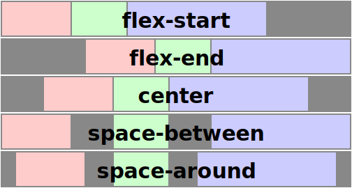
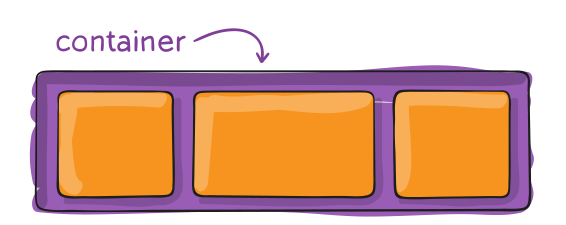
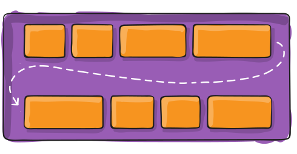
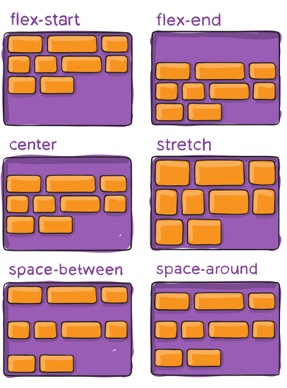
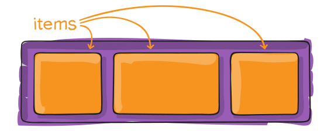
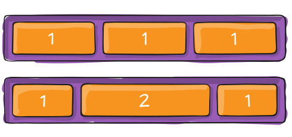

Flex
justify-content | CSS-Tricks
The justify-content property is a sub-property of the Flexible Box Layout module. It defines the alignment along the main axis. It helps distribute extra
Take the pain out of building site search with the Algolia hosted API. Start free now!
The justify-content property is a sub-property of the Flexible Box Layout module.
It defines the alignment along the main axis. It helps distribute extra free space leftover when either all the flex items on a line are inflexible, or are flexible but have reached their maximum size. It also exerts some control over the alignment of items when they overflow the line.
The justify-content property accepts five different values:
flex-start(default): items are packed toward the start lineflex-end: items are packed toward to end linecenter: items are centered along the linespace-between: items are evenly distributed in the line; first item is on the start line, last item on the end linespace-around: items are evenly distributed in the line with equal space around themspace-evenly: items are distributed so that the spacing between any two adjacent alignment subjects, before the first alignment subject, and after the last alignment subject is the same
The following figure helps understand what the justify-content property actually does:

Syntax
justify-content: flex-start | flex-end | center | space-between | space-around | space-evenly
.flex-item {
justify-content: center;
}
Demo
The following demo shows how flex items behave depending on `justify-content` value:
- The red list is set to
flex-start - The yellow is set to
flex-end - The blue is set to
center - The green is set to
space-between - The pink is set to
space-around - The light green is set to
space-evenly
Related Properties
Other Resources
- justify-content in the spec
- justify-content at MDN
- Advanced cross-browser flexbox
- A guide to Flexbox
- Using Flexbox
- Old Flexbox and new Flexbox
sections are semantic
A Complete Guide to Flexbox | CSS-Tricks
Our comprehensive guide to CSS flexbox layout. This complete guide explains everything about flexbox, focusing on all the different possible properties for the parent element (the flex container) and the child elements (the flex items). It also includes history, demos, patterns, and a browser support chart.
Background
The Flexbox Layout (Flexible Box) module (a W3C Candidate Recommendation as of October 2017) aims at providing a more efficient way to lay out, align and distribute space among items in a container, even when their size is unknown and/or dynamic (thus the word "flex").
The main idea behind the flex layout is to give the container the ability to alter its items' width/height (and order) to best fill the available space (mostly to accommodate to all kind of display devices and screen sizes). A flex container expands items to fill available free space or shrinks them to prevent overflow.
Most importantly, the flexbox layout is direction-agnostic as opposed to the regular layouts (block which is vertically-based and inline which is horizontally-based). While those work well for pages, they lack flexibility (no pun intended) to support large or complex applications (especially when it comes to orientation changing, resizing, stretching, shrinking, etc.).
Note: Flexbox layout is most appropriate to the components of an application, and small-scale layouts, while the Grid layout is intended for larger scale layouts.
Basics & Terminology
Since flexbox is a whole module and not a single property, it involves a lot of things including its whole set of properties. Some of them are meant to be set on the container (parent element, known as "flex container") whereas the others are meant to be set on the children (said "flex items").
If "regular" layout is based on both block and inline flow directions, the flex layout is based on "flex-flow directions". Please have a look at this figure from the specification, explaining the main idea behind the flex layout.

Items will be laid out following either the main axis (from main-start to main-end) or the cross axis (from cross-start to cross-end).
- main axis - The main axis of a flex container is the primary axis along which flex items are laid out. Beware, it is not necessarily horizontal; it depends on the
flex-directionproperty (see below). - main-start | main-end - The flex items are placed within the container starting from main-start and going to main-end.
- main size - A flex item's width or height, whichever is in the main dimension, is the item's main size. The flex item's main size property is either the 'width' or 'height' property, whichever is in the main dimension.
- cross axis - The axis perpendicular to the main axis is called the cross axis. Its direction depends on the main axis direction.
- cross-start | cross-end - Flex lines are filled with items and placed into the container starting on the cross-start side of the flex container and going toward the cross-end side.
- cross size - The width or height of a flex item, whichever is in the cross dimension, is the item's cross size. The cross size property is whichever of 'width' or 'height' that is in the cross dimension.
Get the poster!
Reference this guide a lot? Pin a copy up on the office wall.

Properties for the Parent
(flex container)
display
This defines a flex container; inline or block depending on the given value. It enables a flex context for all its direct children.
.container {
display: flex;
}
Note that CSS columns have no effect on a flex container.
flex-direction

This establishes the main-axis, thus defining the direction flex items are placed in the flex container. Flexbox is (aside from optional wrapping) a single-direction layout concept. Think of flex items as primarily laying out either in horizontal rows or vertical columns.
.container { flex-direction: row | row-reverse | column | column-reverse; }
row(default): left to right inltr; right to left inrtlrow-reverse: right to left inltr; left to right inrtlcolumn: same asrowbut top to bottomcolumn-reverse: same asrow-reversebut bottom to top
flex-wrap

By default, flex items will all try to fit onto one line. You can change that and allow the items to wrap as needed with this property.
.container {
flex-wrap: nowrap | wrap | wrap-reverse;
}
nowrap(default): all flex items will be on one linewrap: flex items will wrap onto multiple lines, from top to bottom.wrap-reverse: flex items will wrap onto multiple lines from bottom to top.
There are some visual demos of flex-wrap here.
flex-flow
This is a shorthand for the flex-direction and flex-wrap properties, which together define the flex container's main and cross axes. The default value is row nowrap.
.container {
flex-flow: column wrap;
}
justify-content

This defines the alignment along the main axis. It helps distribute extra free space leftover when either all the flex items on a line are inflexible, or are flexible but have reached their maximum size. It also exerts some control over the alignment of items when they overflow the line.
.container {
justify-content: flex-start | flex-end | center | space-between | space-around | space-evenly | start | end | left | right ... + safe | unsafe;
}
flex-start(default): items are packed toward the start of the flex-direction.flex-end: items are packed toward the end of the flex-direction.start: items are packed toward the start of thewriting-modedirection.end: items are packed toward the end of thewriting-modedirection.left: items are packed toward left edge of the container, unless that doesn't make sense with theflex-direction, then it behaves likestart.right: items are packed toward right edge of the container, unless that doesn't make sense with theflex-direction, then it behaves likestart.center: items are centered along the linespace-between: items are evenly distributed in the line; first item is on the start line, last item on the end linespace-around: items are evenly distributed in the line with equal space around them. Note that visually the spaces aren't equal, since all the items have equal space on both sides. The first item will have one unit of space against the container edge, but two units of space between the next item because that next item has its own spacing that applies.space-evenly: items are distributed so that the spacing between any two items (and the space to the edges) is equal.
Note that that browser support for these values is nuanced. For example, space-between never got support from some versions of Edge, and start/end/left/right aren't in Chrome yet. MDN has detailed charts. The safest values are flex-start, flex-end, and center.
There are also two additional keywords you can pair with these values: safe and unsafe. Using safe ensures that however you do this type of positioning, you can't push an element such that it renders off-screen (e.g. off the top) in such a way the content can't be scrolled too (called "data loss").
align-items

This defines the default behavior for how flex items are laid out along the cross axis on the current line. Think of it as the justify-content version for the cross-axis (perpendicular to the main-axis).
.container { align-items: stretch | flex-start | flex-end | center | baseline | first baseline | last baseline | start | end | self-start | self-end + ... safe | unsafe; }
stretch(default): stretch to fill the container (still respect min-width/max-width)flex-start/start/self-start: items are placed at the start of the cross axis. The difference between these is subtle, and is about respecting theflex-directionrules or thewriting-moderules.flex-end/end/self-end: items are placed at the end of the cross axis. The difference again is subtle and is about respectingflex-directionrules vs.writing-moderules.center: items are centered in the cross-axisbaseline: items are aligned such as their baselines align
The safe and unsafe modifier keywords can be used in conjunction with all the rest of these keywords (although note browser support), and deal with helping you prevent aligning elements such that the content becomes inaccessible.
align-content

This aligns a flex container's lines within when there is extra space in the cross-axis, similar to how justify-content aligns individual items within the main-axis.
Note: This property only takes effect on multi-line flexible containers, where flex-flow is set to either wrap or wrap-reverse). A single-line flexible container (i.e. where flex-flow is set to its default value, no-wrap) will not reflect align-content.
.container {
align-content: flex-start | flex-end | center | space-between | space-around | space-evenly | stretch | start | end | baseline | first baseline | last baseline + ... safe | unsafe;
}
normal(default): items are packed in their default position as if no value was set.flex-start/start: items packed to the start of the container. The (more supported)flex-starthonors theflex-directionwhilestarthonors thewriting-modedirection.flex-end/end: items packed to the end of the container. The (more support)flex-endhonors theflex-directionwhile end honors thewriting-modedirection.center: items centered in the containerspace-between: items evenly distributed; the first line is at the start of the container while the last one is at the endspace-around: items evenly distributed with equal space around each linespace-evenly: items are evenly distributed with equal space around themstretch: lines stretch to take up the remaining space
The safe and unsafe modifier keywords can be used in conjunction with all the rest of these keywords (although note browser support), and deal with helping you prevent aligning elements such that the content becomes inaccessible.

Properties for the Children
(flex items)
order

By default, flex items are laid out in the source order. However, the order property controls the order in which they appear in the flex container.
.item {
order: 5;
}
flex-grow

This defines the ability for a flex item to grow if necessary. It accepts a unitless value that serves as a proportion. It dictates what amount of the available space inside the flex container the item should take up.
If all items have flex-grow set to 1, the remaining space in the container will be distributed equally to all children. If one of the children has a value of 2, the remaining space would take up twice as much space as the others (or it will try to, at least).
.item { flex-grow: 4; }
Negative numbers are invalid.
flex-shrink
This defines the ability for a flex item to shrink if necessary.
.item { flex-shrink: 3; }
Negative numbers are invalid.
flex-basis
This defines the default size of an element before the remaining space is distributed. It can be a length (e.g. 20%, 5rem, etc.) or a keyword. The auto keyword means "look at my width or height property" (which was temporarily done by the main-size keyword until deprecated). The content keyword means "size it based on the item's content" - this keyword isn't well supported yet, so it's hard to test and harder to know what its brethren max-content, min-content, and fit-content do.
.item { flex-basis: | auto; }
If set to 0, the extra space around content isn't factored in. If set to auto, the extra space is distributed based on its flex-grow value. See this graphic.
{kind=link}
flex
This is the shorthand for flex-grow, flex-shrink and flex-basis combined. The second and third parameters (flex-shrink and flex-basis) are optional. The default is 0 1 auto, but if you set it with a single number value, it's like 1 0.
.item { flex: none | [ <'flex-grow'> <'flex-shrink'>? || <'flex-basis'> ] }
It is recommended that you use this shorthand property rather than set the individual properties. The shorthand sets the other values intelligently.
align-self

This allows the default alignment (or the one specified by align-items) to be overridden for individual flex items.
Please see the align-items explanation to understand the available values.
.item {
align-self: auto | flex-start | flex-end | center | baseline | stretch;
}
Note that float, clear and vertical-align have no effect on a flex item.
Examples
Let's start with a very very simple example, solving an almost daily problem: perfect centering. It couldn't be any simpler if you use flexbox.
.parent { display: flex; height: 300px; } .child { width: 100px; height: 100px; margin: auto; }
This relies on the fact a margin set to auto in a flex container absorb extra space. So setting a vertical margin of auto will make the item perfectly centered in both axes.
Now let's use some more properties. Consider a list of 6 items, all with fixed dimensions, but can be auto-sized. We want them to be evenly distributed on the horizontal axis so that when we resize the browser, everything scales nicely, and without media queries.
.flex-container { display: flex; flex-flow: row wrap; justify-content: space-around; }
Done. Everything else is just some styling concern. Below is a pen featuring this example. Be sure to go to CodePen and try resizing your windows to see what happens.
Let's try something else. Imagine we have a right-aligned navigation element on the very top of our website, but we want it to be centered on medium-sized screens and single-columned on small devices. Easy enough.
.navigation {
display: flex;
flex-flow: row wrap;
justify-content: flex-end;
}
@media all and (max-width: 800px) {
.navigation {
justify-content: space-around;
}
}
@media all and (max-width: 500px) {
.navigation {
flex-direction: column;
}
}
Let's try something even better by playing with flex items flexibility! What about a mobile-first 3-columns layout with full-width header and footer. And independent from source order.
.wrapper { display: flex; flex-flow: row wrap; } .wrapper > * { flex: 1 100%; } @media all and (min-width: 600px) { .aside { flex: 1 auto; } } @media all and (min-width: 800px) { .main { flex: 2 0px; } .aside-1 { order: 1; } .main { order: 2; } .aside-2 { order: 3; } .footer { order: 4; } }
Prefixing Flexbox
Flexbox requires some vendor prefixing to support the most browsers possible. It doesn't just include prepending properties with the vendor prefix, but there are actually entirely different property and value names. This is because the Flexbox spec has changed over time, creating an "old", "tweener", and "new" versions.
Perhaps the best way to handle this is to write in the new (and final) syntax and run your CSS through Autoprefixer, which handles the fallbacks very well.
Alternatively, here's a Sass @mixin to help with some of the prefixing, which also gives you an idea of what kind of things need to be done:
@mixin flexbox() { display: -webkit-box; display: -moz-box; display: -ms-flexbox; display: -webkit-flex; display: flex; } @mixin flex($values) { -webkit-box-flex: $values; -moz-box-flex: $values; -webkit-flex: $values; -ms-flex: $values; flex: $values; } @mixin order($val) { -webkit-box-ordinal-group: $val; -moz-box-ordinal-group: $val; -ms-flex-order: $val; -webkit-order: $val; order: $val; } .wrapper { @include flexbox(); } .item { @include flex(1 200px); @include order(2); }
Related Properties
Other Resources
Bugs
Flexbox is certainly not without its bugs. The best collection of them I've seen is Philip Walton and Greg Whitworth's Flexbugs. It's an open-source place to track all of them, so I think it's best to just link to that.